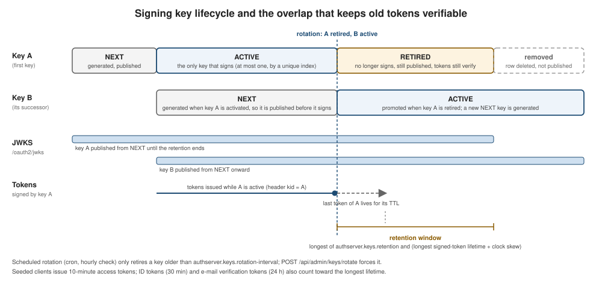

Authorization Server from Scratch: Signing Keys, JWS & JWT
|
This content was generated with the assistance of AI and should be verified against the official documentation before being relied on in production. |
Every token the authorization server signs is only as trustworthy as the key that signed it, and a key that never
changes is a key that is eventually leaked. This page builds the part of the example that owns those keys: how an RSA
key pair is generated, how its private half is stored encrypted, how the public half is published at /oauth2/jwks, how
a new key replaces an old one without invalidating a single token that is still alive, and how the JwtEncoder that
signs the tokens is wired to all of it.
What you build
-
A
signing_keystable that holds every key with a lifecyclestatusofNEXT,ACTIVEorRETIRED, and a database rule that allows at most oneACTIVEkey. -
An RS256 key generator whose private half leaves the generator already encrypted with AES-256-GCM, with a key derived from a passphrase and a salt that never appear in logs.
-
Two views of the same keys: the public JWKS (active, next and still-valid retired keys, public halves only) and the signing set (the single active key, with its private half, which only the
JwtEncodersees). -
A rotation use case, run at startup, on a schedule and on demand, that is safe to run on several instances at once.
-
A signed-token service that issues and verifies the example’s own purpose-bound tokens (for example the e-mail verification token), pinned to RS256.
The theory (what kid, alg and a JWKS are, the classic attacks and why keys must rotate) is in the OAuth Reference:
read JWT and the JOSE Family first, in particular its sections on signing
algorithms and on JWKS, kid, key rotation and caching. This page is the Spring Boot implementation of that
checklist. The decoded structure of the token that these keys sign is the one in the figure below.

The access tokens, ID tokens and refresh tokens themselves, and the claims the example puts in them, are built on the Access, Refresh and ID Tokens page of this guide; the key store is the common ground.
How it works
Three entry points trigger the same RotateSigningKeysUseCase, all through a thin SigningKeyRotator
component that publishes an event afterwards so the caches refresh at once:
-
SigningKeyBootstrapRunnerruns at startup, so a fresh database gets anACTIVEkey and aNEXTkey before the first request. -
SigningKeyRotationJobruns on a schedule (authserver.keys.rotation.cron, hourly by default) and only rotates a key that has been active for the wholeauthserver.keys.rotation-interval. -
POST /api/admin/keys/rotateforces a rotation whatever the age of the key, for example after a suspected compromise.
The figure below shows the same lifecycle against time. The important part is the window after the rotation: a token that key A signed a moment before it was retired is still valid for its whole lifetime, so key A has to stay in the JWKS for at least that long. The code computes that window instead of trusting a constant, as the Retention listing below shows.

Spring building blocks
| Type | Implement or configure | What it does here | Reference |
|---|---|---|---|
|
Implement (a bean returning the public keys) |
Nimbus’s source of keys. The example’s bean is a lambda over a cached set of public keys, which Spring Authorization
Server’s |
|
|
Configure |
Signs the tokens. Built over a second |
|
|
Configure |
Verifies a token against the published keys, with the algorithm pinned and the issuer and timestamps validated. |
|
|
Implement (on the tokens page) |
Adds claims to a token before it is signed; the keys on this page sign whatever it produces. |
|
|
Configure (through |
AES-256-GCM encryption of the private key at rest, with a random initialisation vector per encryption. |
|
|
Implement (the example’s own ports) |
The hexagonal ports the use case depends on; the adapters are |
Data
A key is one row. The private half is stored as private_jwk_encrypted (Base64 text of the AES-GCM ciphertext) and the
public half as a plain JWK, so listing the keys or publishing the JWKS never needs the passphrase.
CREATE TABLE signing_keys
(
kid varchar(64) NOT NULL,
alg varchar(20) NOT NULL,
public_jwk text NOT NULL,
private_jwk_encrypted text NOT NULL,
status varchar(20) NOT NULL,
created_at timestamp with time zone NOT NULL,
activated_at timestamp with time zone,
retired_at timestamp with time zone,
PRIMARY KEY (kid),
CONSTRAINT ck_signing_keys_status CHECK (status IN ('NEXT', 'ACTIVE', 'RETIRED'))
);
-- At most one key can sign at any time.
CREATE UNIQUE INDEX uq_signing_keys_single_active ON signing_keys (status) WHERE status = 'ACTIVE';The three states are enforced by the ck_signing_keys_status check, and the partial unique index
uq_signing_keys_single_active is the database’s guarantee that two instances can never both have an active key. See
partial indexes in the PostgreSQL documentation. The other
tables of the schema are on Data Model and Schema.
Code
Encrypting the private key at rest
The passphrase and the salt come from authserver.keys.encryption.password and .salt (in the dev profile, a random
pair is created once in the owner-only file .irurueta-auth-server/key-encryption under the user’s home directory, and
a warning is logged). The properties record refuses to be created without them and never prints them.
/**
* Inputs of the encryption of private signing keys at rest.
*
* <p>The record never prints its values: a log line or an exception message that mentions it cannot leak them.
*
* @param password the passphrase the encryption key is derived from.
* @param salt the salt of the derivation, hex encoded.
*/
public record KeyEncryptionProperties(String password, String salt) {
/**
* Validates the properties.
*
* @throws IllegalArgumentException if the passphrase or the salt is null or blank.
*/
public KeyEncryptionProperties {
if (password == null || password.isBlank() || salt == null || salt.isBlank()) {
throw new IllegalArgumentException("authserver.keys.encryption.password and .salt must be set");
}
}
/**
* Describes the properties without revealing them.
*
* @return a fixed text.
*/
@Override
public String toString() {
return "KeyEncryptionProperties[redacted]";
}
}The values themselves are read from the externalised configuration described in Externalized Configuration.
AesGcmKeyCipher wraps Spring Security’s Encryptors.stronger, which derives an AES-256 key from the passphrase and the
salt and uses GCM, so a modified ciphertext fails to decrypt instead of decrypting to garbage.
/**
* Encrypts and decrypts the private half of signing keys with AES-256-GCM (Spring Security's
* {@code Encryptors.stronger}). Every encryption uses a fresh random initialisation vector, so encrypting the same
* text twice gives different results.
*/
@Component
public class AesGcmKeyCipher {
/** The encryptor derived from the passphrase and the salt. */
private final BytesEncryptor encryptor;
/**
* Derives the encryption key.
*
* @param properties passphrase and salt.
*/
public AesGcmKeyCipher(final KeyEncryptionProperties properties) {
encryptor = Encryptors.stronger(properties.password(), properties.salt());
}
/**
* Encrypts a text.
*
* @param plain the text.
* @return the encrypted text, Base64 encoded.
*/
public String encrypt(final String plain) {
return Base64.getEncoder().encodeToString(encryptor.encrypt(plain.getBytes(StandardCharsets.UTF_8)));
}
/**
* Decrypts a text produced by {@link #encrypt(String)}.
*
* @param encrypted the encrypted text.
* @return the original text.
* @throws IllegalStateException if the text was not encrypted with the same passphrase and salt, or was altered.
*/
public String decrypt(final String encrypted) {
try {
return new String(encryptor.decrypt(Base64.getDecoder().decode(encrypted)), StandardCharsets.UTF_8);
} catch (final RuntimeException e) {
throw new IllegalStateException("The private key cannot be decrypted", e);
}
}
}See Spring Security Cryptography
and the Encryptors API.
RsaSigningKeyGenerator creates a 2048-bit RSA pair, gives it a random UUID as kid and builds the public and the
private JWK with Nimbus. The private JWK is encrypted before the SigningKey is even constructed, so no unencrypted
private key is ever held by the rest of the application. The TOTP secrets are encrypted with the same mechanism, so
this keys-encryption region is also referenced from the TOTP and recovery codes page of this guide.
/**
* Generates RSA signing keys for the {@code RS256} algorithm. The identifier is a random UUID and the private half
* leaves the generator already encrypted.
*/
@Component
@RequiredArgsConstructor
public class RsaSigningKeyGenerator implements SigningKeyGenerator {
/** Size in bits of the generated RSA keys. */
static final int KEY_SIZE = 2048;
/** Algorithm the keys are used with. */
static final String ALGORITHM = "RS256";
/** Encrypts the private half. */
private final AesGcmKeyCipher cipher;
/**
* Generates a key in the {@link SigningKeyStatus#NEXT} state.
*
* @param now instant at which it is generated.
* @return the key.
* @throws IllegalStateException if RSA is not available.
*/
@Override
public SigningKey generate(final Instant now) {
final var keyId = UUID.randomUUID().toString();
final var keyPair = generateKeyPair();
final var publicKey = (RSAPublicKey) keyPair.getPublic();
final var common = new RSAKey.Builder(publicKey)
.keyID(keyId)
.keyUse(KeyUse.SIGNATURE)
.algorithm(JWSAlgorithm.RS256);
final var publicJwk = common.build().toJSONString();
final var privateJwk = common.privateKey((RSAPrivateKey) keyPair.getPrivate()).build().toJSONString();
return new SigningKey(keyId, ALGORITHM, publicJwk, cipher.encrypt(privateJwk), SigningKeyStatus.NEXT, now,
null, null);
}
/**
* Generates an RSA key pair.
*
* @return the key pair.
*/
private static KeyPair generateKeyPair() {
try {
final var generator = KeyPairGenerator.getInstance("RSA");
generator.initialize(KEY_SIZE);
return generator.generateKeyPair();
} catch (final NoSuchAlgorithmException e) {
throw new IllegalStateException("RSA is not available", e);
}
}
}See Nimbus JOSE + JWT and RFC 7517: JSON Web Key.
One secret, one key per purpose
The same passphrase is also the root of other, unrelated secrets (the trusted-device cookie signature and the TOTP
secrets). PurposeKeyDerivation gives each purpose its own salt and key so that no two uses share a key. The signing-key
cipher keeps the configured salt itself, so keys that are already stored still decrypt.
/**
* Derives, from the key-encryption secret ({@link KeyEncryptionProperties}), a distinct salt and key for each purpose
* other than the encryption of signing keys, so no two uses share a key: a key exposed or misused for one purpose
* says nothing about the others. The salt of a purpose is the HMAC-SHA256 of the purpose label keyed with the
* configured salt; its key is derived from the passphrase and that salt with PBKDF2-HMAC-SHA256. The signing-key
* cipher ({@link AesGcmKeyCipher}) keeps using the configured salt itself, so the keys already stored still decrypt.
*/
@Component
@RequiredArgsConstructor
public class PurposeKeyDerivation {
/** Algorithm that derives the salt of a purpose. */
private static final String SALT_ALGORITHM = "HmacSHA256";
/** Algorithm that derives the key of a purpose. */
private static final String KEY_ALGORITHM = "PBKDF2WithHmacSHA256";
/** PBKDF2 iterations; a key is derived once per purpose, when its bean is created. */
private static final int ITERATIONS = 100_000;
/** Size of a derived key in bits (AES-256 / HMAC-SHA256). */
private static final int KEY_BITS = 256;
/** The passphrase and the salt of the key-encryption secret. */
private final KeyEncryptionProperties properties;
/**
* Derives the salt of a purpose.
*
* @param purpose label of the purpose, for example {@code totp-secret}.
* @return the salt, hex encoded, as {@code Encryptors.stronger} expects it.
*/
public String saltFor(final String purpose) {
try {
final var mac = Mac.getInstance(SALT_ALGORITHM);
mac.init(new SecretKeySpec(properties.salt().getBytes(StandardCharsets.UTF_8), SALT_ALGORITHM));
return HexFormat.of().formatHex(mac.doFinal(purpose.getBytes(StandardCharsets.UTF_8)));
} catch (final GeneralSecurityException e) {
throw new IllegalStateException("The salt of " + purpose + " cannot be derived", e);
}
}
/**
* Derives the key of a purpose.
*
* @param purpose label of the purpose, for example {@code trusted-device-cookie}.
* @return the 256-bit key.
*/
public byte[] keyFor(final String purpose) {
final var spec = new PBEKeySpec(properties.password().toCharArray(),
HexFormat.of().parseHex(saltFor(purpose)), ITERATIONS, KEY_BITS);
try {
return SecretKeyFactory.getInstance(KEY_ALGORITHM).generateSecret(spec).getEncoded();
} catch (final GeneralSecurityException e) {
throw new IllegalStateException("The key of " + purpose + " cannot be derived", e);
} finally {
spec.clearPassword();
}
}
}The derivation is PBKDF2 with HMAC-SHA-256, specified in RFC 8018; see also the OWASP Key Management Cheat Sheet.
Publishing keys and signing with the active one
DatabaseJwkSourceConfiguration is the heart of the page. It builds two CachedJwkSet beans, each refreshed after a
rotation and otherwise cached for authserver.keys.jwks-cache-ttl (30 seconds by default): publishedJwkSet for the
public JWKS and signingJwkSet for the active key with its private half. The jwkSource bean exposes only the public
set, and jwtEncoder is a NimbusJwtEncoder over the signing set. SigningKeyJwkMapper converts the stored keys
and is the only class that decrypts a private key.
/**
* Serves the signing keys kept by the key use cases. Two views of them exist on purpose: the public JWKS lists the
* active key, the next key and the still-valid retired keys, whereas the {@link JwtEncoder} only ever sees the single
* active key with its private half, so signing never has to choose between several keys. The conversion of the
* stored keys into JSON Web Keys belongs to the {@link SigningKeyJwkMapper}.
*/
@Configuration(proxyBeanMethods = false)
public class DatabaseJwkSourceConfiguration {
/**
* Creates the cached set of public keys.
*
* @param published use case that finds the keys to publish.
* @param mapper maps the keys onto JSON Web Keys.
* @param clock source of the current time.
* @param ttl how long the set is kept ({@code authserver.keys.jwks-cache-ttl} in {@code application.yml}).
* @return the cache; call {@link CachedJwkSet#refresh()} after a rotation.
*/
@Bean
public CachedJwkSet publishedJwkSet(
final PublishedSigningKeysUseCase published, final SigningKeyJwkMapper mapper, final Clock clock,
@Value("${authserver.keys.jwks-cache-ttl}") final Duration ttl) {
return new CachedJwkSet(() -> mapper.toPublicJwkSet(published.execute()), ttl, clock);
}
/**
* Creates the cached set holding only the active key, with its private half.
*
* @param active use case that finds the active key.
* @param mapper maps the key onto a JSON Web Key, decrypting its private half.
* @param clock source of the current time.
* @param ttl how long the set is kept ({@code authserver.keys.jwks-cache-ttl} in {@code application.yml}).
* @return the cache; call {@link CachedJwkSet#refresh()} after a rotation.
*/
@Bean
public CachedJwkSet signingJwkSet(
final ActiveSigningKeyUseCase active, final SigningKeyJwkMapper mapper, final Clock clock,
@Value("${authserver.keys.jwks-cache-ttl}") final Duration ttl) {
return new CachedJwkSet(() -> mapper.toSigningJwkSet(active.execute()), ttl, clock);
}
/**
* Creates the source of the public JWKS. It never holds a private key.
*
* @param publishedJwkSet the cached public keys.
* @return the source.
*/
@Bean
public JWKSource<SecurityContext> jwkSource(@Qualifier("publishedJwkSet") final CachedJwkSet publishedJwkSet) {
return (selector, context) -> selector.select(publishedJwkSet.get());
}
/**
* Creates the encoder that signs tokens with the active key.
*
* @param signingJwkSet the cached active key.
* @return the encoder.
*/
@Bean
public JwtEncoder jwtEncoder(@Qualifier("signingJwkSet") final CachedJwkSet signingJwkSet) {
return new NimbusJwtEncoder((selector, context) -> selector.select(signingJwkSet.get()));
}
}/**
* Maps the domain {@link SigningKey} onto Nimbus JSON Web Keys: the public set lists the public half of every key it
* is given, whereas the signing set holds the single active key with its private half, decrypted with the
* {@link AesGcmKeyCipher}.
*/
@Component
@RequiredArgsConstructor
public class SigningKeyJwkMapper {
/** Decrypts the private half of a key. */
private final AesGcmKeyCipher cipher;
/**
* Builds the set of public keys.
*
* @param keys the keys to publish.
* @return the set, with the public half of each key only.
* @throws IllegalStateException if a stored key is not a valid JWK.
*/
public JWKSet toPublicJwkSet(final List<SigningKey> keys) {
return new JWKSet(keys.stream().map(key -> toJwk(key.publicJwk()).toPublicJWK()).toList());
}
/**
* Builds the set holding the active key, with its private half.
*
* @param active the active key, if any.
* @return the set; empty before the first rotation has created an active key.
* @throws IllegalStateException if the stored key is not a valid JWK.
*/
public JWKSet toSigningJwkSet(final Optional<SigningKey> active) {
return new JWKSet(active.map(key -> toJwk(cipher.decrypt(key.encryptedPrivateJwk()))).stream().toList());
}
/**
* Parses a JSON Web Key.
*
* @param json the key as JSON.
* @return the key.
* @throws IllegalStateException if the text is not a valid key.
*/
public JWK toJwk(final String json) {
try {
return JWK.parse(json);
} catch (final ParseException e) {
throw new IllegalStateException("A stored signing key is not a valid JWK", e);
}
}
}See the Spring Authorization Server
reference, whose configuration picks up a JWKSource<SecurityContext> bean to serve the JWKS endpoint, and
RFC 7517 section 5, the JWK Set format.
Rotating
The use case applies three transitions in one pass: retire the active key if it is due (or if the rotation is forced),
promote the NEXT key to ACTIVE (generating one first if there is none), and make sure a new NEXT key exists.
Finally it deletes the retired keys whose retention has passed. Everything runs inside withRotationLock, so two
instances that start their schedule at the same instant cannot both create an active key.
/**
* Does whatever the key lifecycle requires at the current instant: the scheduled path, which only rotates a key
* that has signed for the whole rotation interval.
*/
public void execute() {
run(false);
}
/**
* Rotates now, whatever the age of the active key: the active key is retired, the next key promoted and a new
* next key generated (for example after a suspected key compromise). Expired retired keys are deleted too.
*/
public void executeForced() {
run(true);
}
/**
* Applies the lifecycle transitions while holding the rotation lock.
*
* @param force whether the active key is replaced even when it is not due.
*/
private void run(final boolean force) {
final var now = clock.instant();
final var retention = signingKeyRetention.effective();
signingKeyRepository.withRotationLock(() -> {
rotate(now, force, retention);
return null;
});
}
/**
* Applies the lifecycle transitions that are due, or forced.
*
* @param now current instant.
* @param force whether the active key is replaced even when it is not due.
* @param retention how long a retired key stays published.
*/
private void rotate(final Instant now, final boolean force, final Duration retention) {
final var keys = signingKeyRepository.findAll();
var active = first(keys, SigningKeyStatus.ACTIVE);
var next = first(keys, SigningKeyStatus.NEXT);
if (active != null && (force || isDue(active, now))) {
signingKeyRepository.save(active.retire(now));
active = null;
}
if (active == null) {
final var promoted = next != null ? next : signingKeyGenerator.generate(now);
signingKeyRepository.save(promoted.activate(now));
next = null;
}
if (next == null) {
signingKeyRepository.save(signingKeyGenerator.generate(now));
}
keys.stream()
.filter(key -> key.status() == SigningKeyStatus.RETIRED && isExpired(key, now, retention))
.forEach(key -> signingKeyRepository.deleteByKid(key.kid()));
}The scheduling is Spring’s @Scheduled; see the Task Execution and Scheduling
reference.
The lock is a PostgreSQL transaction-scoped advisory lock, taken as the first statement of a transaction and released when it ends, which also means a crashed instance cannot leave it held.
@Override
public <T> T withRotationLock(final Supplier<T> action) {
return transactionTemplate.execute(status -> {
// the lock is released when the transaction ends; the row mapper only drains the (void) result
jdbcClient.sql("SELECT pg_advisory_xact_lock(?)").param(ROTATION_LOCK_KEY)
.query((rs, rowNum) -> Boolean.TRUE).list();
return action.get();
});
}See Advisory Locks in the PostgreSQL documentation.
Retention
How long a retired key stays published is derived, not guessed. The effective retention is the longer of the configured
authserver.keys.retention (two hours by default) and the longest lifetime of any token the server signs plus
authserver.keys.clock-skew (60 seconds by default). The lifetimes come from the registered clients (the seeded clients issue
10-minute self-contained access tokens, and the ID token lifetime is 30 minutes) and from the 24-hour e-mail
verification token. In the example as shipped the verification token is the longest, so a retired key is in practice
kept for a little over a day. Registering a client with longer-lived tokens lengthens the window automatically.
/**
* Computes the effective retention at this moment: registering a client with longer-lived tokens lengthens it.
*
* @return the longest of the configured retention and the longest signed-token lifetime plus the clock skew.
*/
public Duration effective() {
final var longestToken = Stream.of(signedTokenLifetimes.longest(), RegisterAccountUseCase.VERIFICATION_TTL)
.max(Duration::compareTo).orElseThrow();
final var needed = longestToken.plus(clockSkew);
return needed.compareTo(configuredRetention) > 0 ? needed : configuredRetention;
}The rule is the one RFC 8725 and the OAuth Reference ask for: a verifier must be able to find the key of any token it may still be handed. See RFC 8725: JSON Web Token Best Current Practices.
Signing and verifying with the encoder
NimbusSignedTokenService is the example’s own use of the encoder and the decoder, for tokens that are not OAuth tokens
(for instance the e-mail verification link). It signs a JWT with the issuer, subject, issued-at, expiry and a
purpose claim, always with the RS256 header; and it verifies with a decoder over the public keys, with the algorithm
pinned to RS256, the issuer and the timestamps validated, and then the purpose compared. Every failure (expired,
tampered, other issuer, other purpose, malformed) is the same empty result, so a caller cannot tell why a token was refused.
/**
* Issues and verifies purpose-bound tokens as JWTs signed with the active signing key and verified against the
* published keys. Verification checks the signature, the issuer, the timestamps and then the purpose; every failure
* is reported the same way, as an empty result.
*/
@Component
public class NimbusSignedTokenService implements SignedTokenService {
/** Source of the current time. */
private final Clock clock;
/** Issuer written to, and required of, every token. */
private final String issuer;
/** Signs tokens. */
private final JwtEncoder encoder;
/** Verifies tokens. */
private final JwtDecoder decoder;
/**
* Creates the service.
*
* @param encoder signs tokens with the active key.
* @param jwkSource public keys the signatures are verified against.
* @param clock source of the current time.
* @param issuer issuer of the tokens ({@code spring.security.oauth2.authorizationserver.issuer}).
*/
public NimbusSignedTokenService(
final JwtEncoder encoder, final JWKSource<SecurityContext> jwkSource, final Clock clock,
@Value("${spring.security.oauth2.authorizationserver.issuer}") final String issuer) {
this.encoder = encoder;
this.clock = clock;
this.issuer = issuer;
final var timestamps = new JwtTimestampValidator();
timestamps.setClock(clock);
final var nimbusDecoder = NimbusJwtDecoder.withJwkSource(jwkSource)
.jwsAlgorithm(SignatureAlgorithm.RS256)
.build();
nimbusDecoder.setJwtValidator(new DelegatingOAuth2TokenValidator<Jwt>(
List.<OAuth2TokenValidator<Jwt>>of(new JwtIssuerValidator(issuer), timestamps)));
decoder = nimbusDecoder;
}
/**
* Issues a signed token.
*
* @param subject who or what the token is about.
* @param purpose what the token allows.
* @param ttl how long the token stays valid.
* @return the compact token.
*/
@Override
public String issue(final String subject, final String purpose, final Duration ttl) {
final var now = clock.instant();
final var claims = JwtClaimsSet.builder()
.issuer(issuer)
.subject(subject)
.issuedAt(now)
.expiresAt(now.plus(ttl))
.claim(PURPOSE_CLAIM, purpose)
.build();
final var header = JwsHeader.with(SignatureAlgorithm.RS256).build();
return encoder.encode(JwtEncoderParameters.from(header, claims)).getTokenValue();
}
/**
* Verifies a token.
*
* @param token the compact token.
* @param purpose purpose the token must have been issued for.
* @return the subject, or an empty optional when the token is expired, tampered, malformed, from another issuer or
* issued for another purpose.
*/
@Override
public Optional<String> verify(final String token, final String purpose) {
try {
final var jwt = decoder.decode(token);
if (purpose != null && purpose.equals(jwt.getClaimAsString(PURPOSE_CLAIM))) {
return Optional.ofNullable(jwt.getSubject());
}
return Optional.empty();
} catch (final JwtException | IllegalArgumentException e) {
return Optional.empty();
}
}
}See the Spring Security JWT resource server reference and RFC 7519: JSON Web Token. The signature format itself is RFC 7515: JSON Web Signature.
API
Two administration endpoints and the public JWKS expose the keys. The administration endpoints need a bearer token
with the scope admin and never return private key material.
/api/admin/keys:
get:
tags: [ Signing keys ]
operationId: listSigningKeys
summary: Lists the signing keys
description: Never exposes private key material. Needs scope admin.
security:
- bearer: [ admin ]
responses:
'200':
description: The keys
content:
application/json:
schema:
type: array
items:
$ref: '#/components/schemas/SigningKeyResponse'
'401':
$ref: '#/components/responses/Unauthorized'
'403':
$ref: '#/components/responses/AdminScopeRequired'
/api/admin/keys/rotate:
post:
tags: [ Signing keys ]
operationId: rotateSigningKeys
summary: Rotates the signing keys now
description: >-
Forces a rotation whatever the age of the active key: the active key is retired (it stays published until
the tokens it signed expire), the next key becomes active and a new next key is generated. Keys retired for
longer than the retention are deleted, and the published keys are refreshed. The scheduled rotation, in
contrast, only rotates a key that is due. Needs scope admin.
security:
- bearer: [ admin ]
responses:
'200':
description: The keys after the rotation
content:
application/json:
schema:
type: array
items:
$ref: '#/components/schemas/SigningKeyResponse'
'401':
$ref: '#/components/responses/Unauthorized'
'403':
$ref: '#/components/responses/AdminScopeRequired'See the OpenAPI Specification.
SigningKeyResponse:
type: object
description: A signing key, without its private half
required: [ kid, alg, status, createdAt, publicJwk ]
properties:
kid:
type: string
description: Key identifier, the kid header of the tokens it signs.
alg:
type: string
description: JWS algorithm, for example RS256.
status:
type: string
description: Lifecycle state, NEXT, ACTIVE or RETIRED.
createdAt:
type: string
format: date-time
description: Creation instant.
activatedAt:
type: string
format: date-time
description: Instant at which the key started signing; null while it is the next key.
retiredAt:
type: string
format: date-time
description: Instant at which the key stopped signing; null until it is retired.
publicJwk:
type: string
description: The public key as a serialized JSON Web Key.The schemas follow the OpenAPI Schema Object rules.
Listing the keys, with ADMIN_TOKEN holding an access token that carries the admin scope:
curl -s http://localhost:9000/api/admin/keys \
-H "Authorization: Bearer $ADMIN_TOKEN"Forcing a rotation returns the keys as they are afterwards, the former ACTIVE key now RETIRED:
curl -s -X POST http://localhost:9000/api/admin/keys/rotate \
-H "Authorization: Bearer $ADMIN_TOKEN"Each element of the array has the kid, alg, status, createdAt, activatedAt, retiredAt and publicJwk properties
of the SigningKeyResponse schema above. Without a token the answer is 401, and with a token that lacks the admin
scope it is 403.
The public keys are served by Spring Authorization Server at /oauth2/jwks and need no authentication. The response is a
JWK Set whose members are the public halves only, one per published key, each with its kid:
curl -s http://localhost:9000/oauth2/jwksA resource server reads this document once, caches it, and fetches it again when it meets a kid it does not know.
Alternatives: KMS and HSM
Keeping an encrypted private key in the application database is a deliberate trade-off for a self-contained example: the passphrase protects the keys at rest, but whoever can read both the database and the passphrase can sign tokens. In production the usual answer is to keep the private key where it cannot be read at all, and sign by asking a service to do it. The pieces that change are small, because the example already isolates the keys behind two views:
-
The public
JWKSourcedoes not change: the public keys can still be listed from a table or fetched from the key service (for example AWS Key Management Service can export the public key of an asymmetric KMS key). -
The signing side changes.
NimbusJwtEncoderneeds aJWKSourcethat returns a key with a private half, which a KMS or an HSM never gives away. Instead you provide aJwtEncoderof your own that builds the signing input (the Base64url header and payload) and has the service sign it, using Nimbus’sJWSSignerinterface, or you wrap the service in a customJWSSigner. Thekidof the published key must be the identifier of the remote key. -
Rotation moves to the service: check in each provider’s documentation whether automatic rotation covers asymmetric signing keys, and if not, rotate by creating a new key and re-pointing an alias. Versioned keys (as in Google Cloud KMS and Azure Key Vault) play the role of the
NEXT,ACTIVEandRETIREDstates here. The retention-window logic of this page applies unchanged. -
A PKCS#11 HSM is reached through the JDK’s
SunPKCS11provider, which exposes the key as aPrivateKeywhose bytes cannot be extracted; Nimbus’sRSASSASignercan be given such a key together with the provider, so only the key loading differs.
Official starting points: AWS KMS, Google Cloud KMS, Azure Key Vault and the Java PKCS#11 Reference Guide. The cost of the remote option is a network call on every signature, which is why signing short-lived tokens in volume is usually combined with a local cache or with signing only the longer-lived tokens remotely.
Tests
The behaviour is covered at three levels, described here rather than pasted because these test classes carry no tag in
the example: RotateSigningKeysUseCaseTest and SigningKeyRetentionTest exercise the transitions and the retention
arithmetic with a fixed clock, AesGcmKeyCipherTest shows that encrypting twice gives different text and that a
tampered or wrongly keyed value is rejected, and KeyRotationIT runs the whole stack against PostgreSQL. It checks that
a fresh start publishes the active and next keys with no private parts, that a token signed before a rotation validates
until its key is removed, that a key retired longer than the configured retention is kept while its tokens may still
be alive, and that the admin endpoints return no private material and reject a caller without the admin scope.
Security notes and pitfalls
-
Never generate a key at startup in production. The common tutorial pattern of building a
KeyPairin a@Beanmethod gives each instance its own key and a new one on every restart: tokens stop validating across instances and after a deploy. Keys here live in the database and every instance reads the same ones. -
Always set a
kid, and let the verifier select by it. The generator gives every key a random UUID, and the JWKS lists several keys at once, which is only workable if tokens carry thekidof the key that signed them. -
Pin the algorithm.
NimbusSignedTokenServicebuilds its decoder with RS256 only and the header it issues is always RS256, which closes thealg: noneand the key-confusion attacks that RFC 8725 describes. Never read the algorithm from the token to decide how to verify it. -
Encrypt private keys at rest, and keep the passphrase out of the database. The passphrase and the salt come from configuration or the environment, never from a file in the repository, and
KeyEncryptionPropertiesredacts itself in logs. Changing the passphrase makes every stored private key undecryptable, so it is a migration, not a setting. -
Back up the keys and the passphrase together, and test the restore. A database backup without the passphrase is a set of keys that cannot sign: every token issued so far is still verifiable, but nothing new can be issued. One rotation is not enough to recover, because it promotes the existing
NEXTkey, whose private half was encrypted with the lost passphrase too. Delete theNEXTrow before forcing the rotation (or force two rotations), so the key that becomesACTIVEis generated and encrypted with the new passphrase. -
Rotate on a schedule and after any suspected compromise, and remember that a forced rotation stops signing with the old key immediately but still publishes it for the retention window so legitimate tokens keep working. If the key itself leaked, the tokens it signed must be treated as compromised for that window too: shorten the retention or delete the key row.
-
Rotate under a lock. Without
withRotationLocktwo instances can both promote a key and both create aNEXTkey; the unique index would then reject one of them as an error at best. -
Keep the JWKS cache short and refresh it on rotation. The 30-second default bounds how long a stale key set can be served; verifiers that cache the JWKS for hours need the retention window to cover them as well.